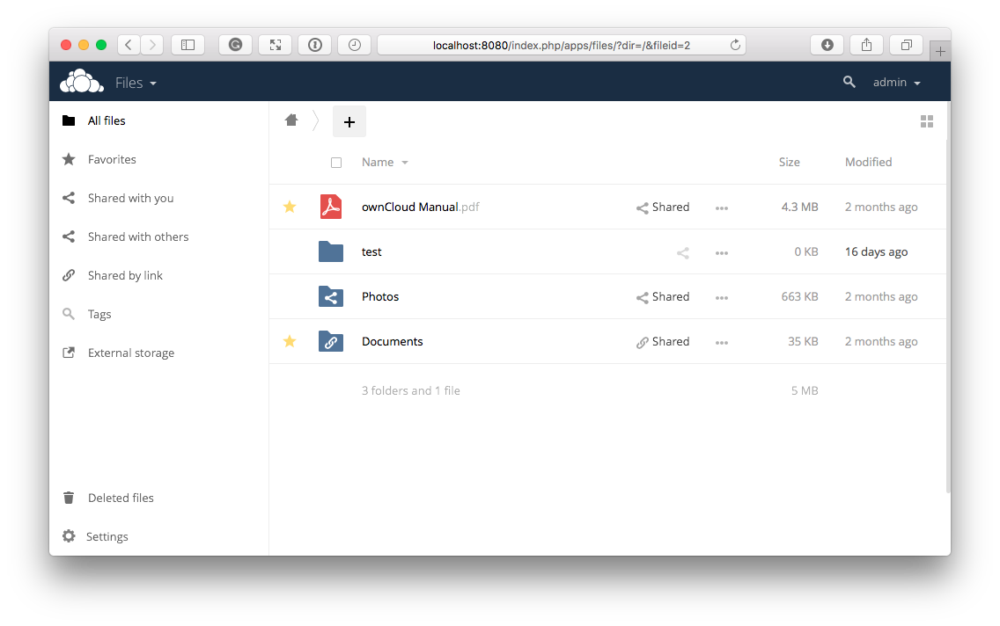
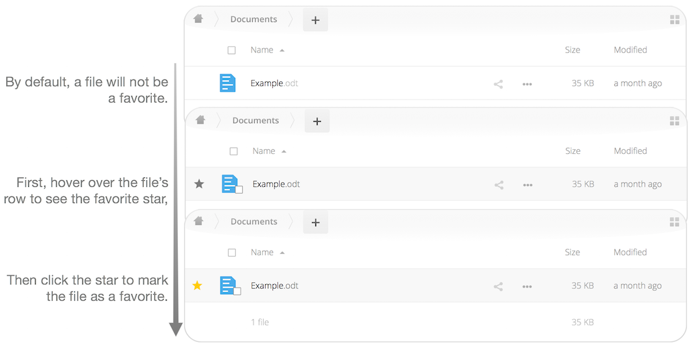
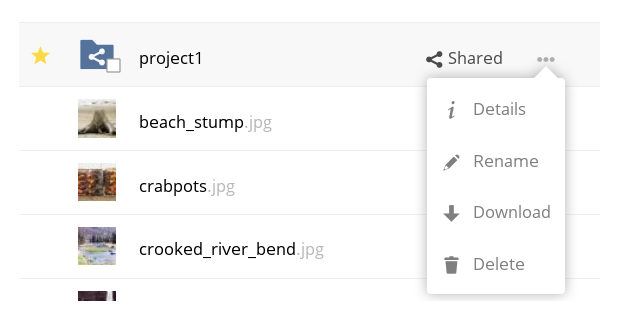

WebUI Overview¶
You can access your files with the ownCloud Web interface, as well as: create, preview, edit, delete, share, and re-share files.
Important
Your ownCloud administrator has the option to disable these features. If any of them are missing on your system ask your server administrator.

File Controls¶
When you mouseover, or hover over, a file in the Files view, as in the image below, ownCloud displays three file controls. These are:

Marking Favorites¶
Click the star to the left of the file icon to mark it as a favorite, and quickly find all of your favorites with the Favorites filter on the left sidebar.

Sharing Files¶
The sharing files control is a shortcut to the file and folder sharing functionality within ownCloud. ownCloud sharing supports:
- Sharing files and folders with users or groups
- Creating public shares with hyperlinks
- Listing recipients of existing shares
- Deleting existing shares
The Overflow Menu¶
The Overflow Menu allows you to:
- Display File Details
- Rename files
- Download files
- Delete files

Display File Details¶
When you display details about a file, by clicking “Details” in the Overflow Menu, a set of tabs (or views) are available. These are:
| View | Description |
|---|---|
| Details | This shows details about a file, such as its name, size, and when it was created or last updated. |
| Activity | This shows a history of activity on the file, such as when it was created, updated, and shared. |
| Sharing | It’s here that shares are managed. To know more, refer to the Sharing Files section. |
| Version | This shows a history of all the versions of the file. This is not available for folders. |
You can see an example of the Activity view in the image below.